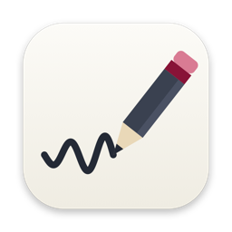

Graphite
Meeting notes that stay on your computer. Graphite listens to your calls, writes the transcript while you write notes, and drafts a summary when the meeting ends. No bot in the call, and no audio is kept.
Mac
Apple Silicon (M1 or newer), macOS 14.4 or newer. Open Terminal and paste:
curl -fsSL https://raw.githubusercontent.com/sergerprojects/graphite/main/scripts/install-release.sh | bash
Installs the newest version and opens it. Later versions update themselves between meetings.
Windows (preview)
Windows 10 or 11, 64-bit. Open PowerShell and paste:
irm https://raw.githubusercontent.com/sergerprojects/graphite/main/scripts/install-release.ps1 | iex
Windows may warn that the installer is unsigned: choose More info, then Run anyway. Speaker names from the call app and screen snapshots are Mac-only for now.
Prefer to download it yourself? All releases and release notes.
Or let your AI agent set it up
Paste this into Claude Code or another coding agent. It checks your computer, asks before installing, and walks you through the calendar and the first test.
Set up Graphite on this computer. Read https://raw.githubusercontent.com/sergerprojects/graphite/main/docs/AGENT-SETUP.md and follow it. Ask me before you install anything.
The agent does the install and checks. You do the clicks that need you: allowing the microphone, signing in, and pasting your calendar link yourself, so the agent never sees it. Read the instructions it follows.
What it does
- Works with any call app. Google Meet, Zoom, Teams, Slack huddles: it hears your microphone and the call audio.
- Transcribed on your computer. Speech recognition runs locally; transcripts and notes never leave it.
- Real names, not "Speaker 1". Reads who the call app shows as speaking, and tells voices apart when it can't (names from the call app are Mac-only).
- Notes you actually write. Markdown as you type, folders, search, and a chat with the meeting while it runs.
- Summary when it ends, written through your own Claude Code sign-in, or fully on-device with a local model. Fix a misspelled name once and it is fixed everywhere; one click to undo.
- Stops when the call does. It ends the meeting when you leave, and shares to Slack as a draft when you ask.
Before you use it
- Consent: transcribing people can need their consent. Tell the people on your calls.
- Privacy: there is no analytics or telemetry. Summaries and Chat send the transcript text to Claude through your own Claude Code sign-in unless you choose a local model.
- Not signed by Apple or Microsoft: the install lines above avoid the warnings. Check with your security team before wide use.